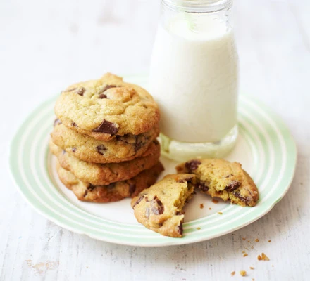

Vintage Chocolate Chip Cookies

Description
An easy chocolate chip cookie recipe for soft biscuits with a squidgy
middle that will impress family and friends. Make plenty as they're sure
to be a hit.
Ingredients
- 150g salted butter, softened
- 80g light brown muscovado sugar
- 80g granulated sugar
- 2 tsp vanilla extract
- 1 large egg
- 225g plain flour
- ½ tsp bicarbonate of soda
- ¼ tsp salt
- 200g plain chocolate chips or chunks
Steps
- Heat the oven to 190C/fan170C/gas 5 and line two baking sheets with non-stick baking paper.
- Put 150g softened salted butter, 80g light brown muscovado sugar and 80g granulated sugar into a bowl and beat until creamy.
- Beat in 2 tsp vanilla extract and 1 large egg.
- Sift 225g plain flour, ½ tsp bicarbonate of soda and ¼ tsp salt into the bowl and mix it in with a wooden spoon.
- Add 200g plain chocolate chips or chunks and stir well.